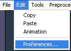
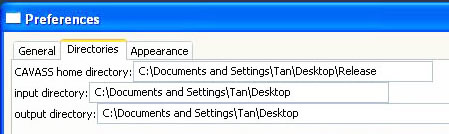

CAVASS Tutorial
MIPG
A.2 How to Import and Export Data
In order to access image files, The application should setup the input and output paths appropriately
To begin the application
Click on the Edit button located on the upper tools command bar. Select Preferences...

To set the paths:
Click on the Directories tab in the Preferences windows. Key in the directory information for the CAVASS home directory, Input directory and Output directory
Then click OK to get out of this window. Now your CAVASS software is ready to access the data files.
